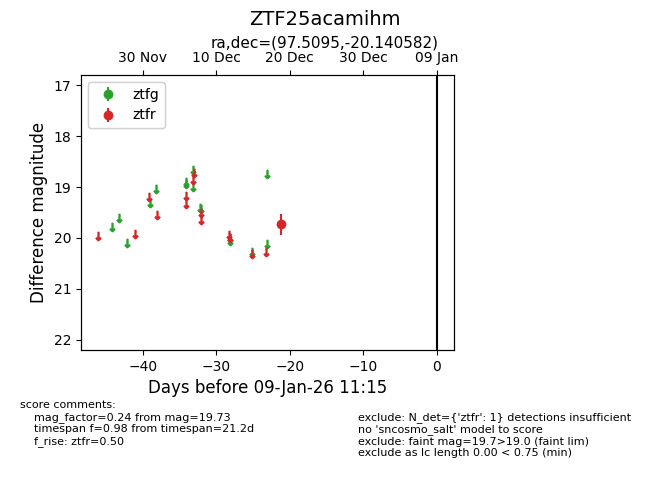
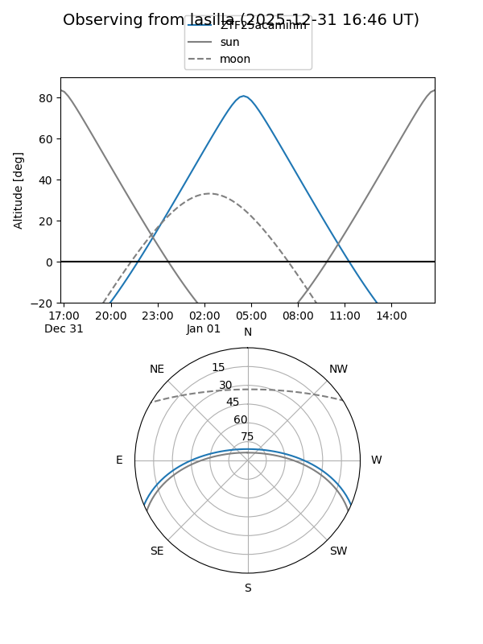
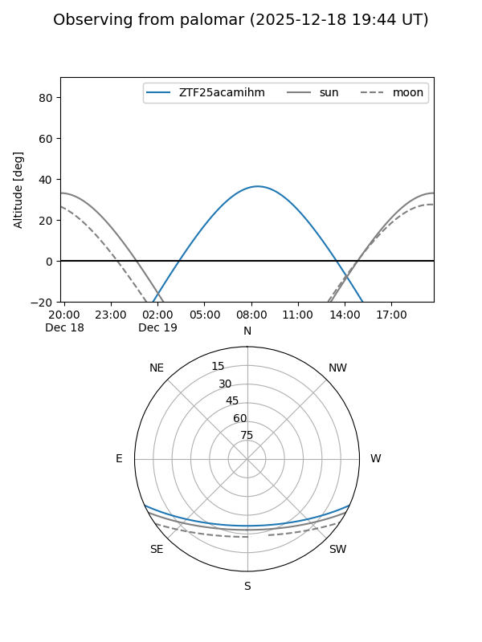

ZTF25acamihm
Target ZTF25acamihm at 2025-12-31 16:59
Aliases and brokers:
FINK:
Lasair:
ALeRCE:
alt names
ZTF25acamihm (ztf,fink_ztf)
Coordinates:
equatorial (ra, dec) = 97.5095,-20.14058
equatorial (HMS+DMS) = 06:30:02.28,-20:08:26.10
galactic (l, b) = (228.8464,-13.58656)
Flags:
Photometry:
last ztfr=19.73
1 ztfr detections
Lightcurve

Visibility


Additional plots